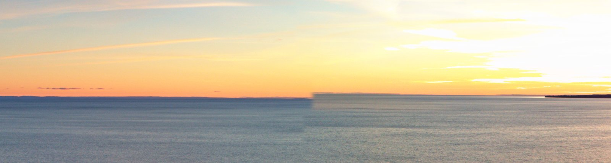
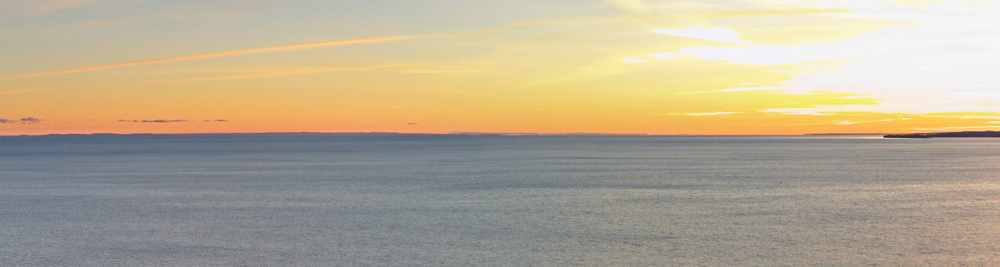

Most sphere problems happen in the air before you open any software: blown-out skies near the sun, noisy night frames, or a horizon tilted by wind. After 1,500+ flights and inspecting real sphere sets in zenpano, here is what matters while shooting.
In the drone app (DJI Fly, or DJI GO 4 on the Mavic Air and Mavic Pro), switch to Pano mode and set the format of the original frames to RAW where your drone offers it. This setting is separate from the one for single photos, and on some drones it only shows in Pano mode with the drone in the air. If it is set to none, the card keeps only the app's stitched sphere, so check it before every sphere. On some drones the originals are either JPG or RAW, not both; my Mini 2 saves JPG and DNG side by side. Note that the Mini 5 Pro currently uses camera JPG frames in zenpano.
Once you land, copy the entire frame subfolder from the SD card rather than only the app's stitched sphere—see the article for the exact folder path and frame counts.
Facing the sun is the main exposure trap. In auto exposure, the camera shifts settings between frames—on one set I checked, shutter speed jumped from 1/40 s to 1/4000 s in the same sphere. Frames pointed near the sun clip the sky on the sensor, and blown DNG highlights cannot be recovered later.
I switch to manual exposure (Pro mode) before starting and meter on the brightest sky toward the sun. The drone then locks that exposure across every frame: on two of my Mini 2 spheres in manual mode, all 26 frames share the exact same shutter speed and ISO, whereas my auto-exposure spheres span 3 to 8 different values. The ground looks dark in the preview, which is fine—you can lift shadows from DNG later, not clipped white sky. On a sunset sphere I shot this way at 1/25 s and ISO 100, the DNGs kept both sky colour and clouds intact.
If you stay in auto exposure, point toward the sun before starting and dial in -0.3 or -0.7 EV. Turn on the overexposure warning ("zebra" stripes) in the app's camera settings. In RAW, don't underexpose until every stripe vanishes: zebras are computed from the JPG preview, so the DNG still holds detail inside part of the marked area. Leave only small striped patches right around the sun to protect highlights while keeping shadows recoverable.
Later in zenpano, pick the DNG source on PC or DNG+ on Android, lower Exposure slightly for a deeper sky, and use «Shadow recovery» and «Highlight reduction» (see the article) to bring back the dark ground.
At dusk, start a bit earlier while there is enough light to keep ISO low and shutter speed short. On a small drone sensor, ISO 1600 brings heavy noise that swamps dark areas.
In fading light, avoid 1/4 s to 0.6 s exposures if there is any wind: motion blur makes frames harder to align. A slightly higher ISO with a faster shutter gives sharper frames to stitch than a wind-shaken exposure. During stitching, zenpano temporarily brightens dark frames for alignment only, keeping the original lighting in the final sphere.
Wind tilts the drone between shots and can leave the horizon uneven across seams. Pick a calmer day when possible, and over open water keep some shoreline in view to anchor alignment.


As stitchedAfter «Adjust a frame»How the frames are moved back, step by step, in a short video: «Adjust a frame» on a windy set.
If your horizon tilts by the same angle across flights, calibrate the gimbal: run Auto calibration on a flat surface, then adjust horizontal tilt manually. You find it in the app's settings, under gimbal calibration. In zenpano, you can also straighten a tilted horizon after stitching with Level the horizon. If the propellers show at the top of the frames, raise the zenith «Margin» before filling the sky.
Cars, people, waves, and clouds shift while the drone rotates, often ending up doubled or cut off at a seam. That doesn't ruin the set: as shown in the article, Repair an area fixes localized seam breaks from overlapping frames. On PC, Adjust a frame nudges a frame that stayed slightly out of place, and Moving clouds handles fast-moving clouds.